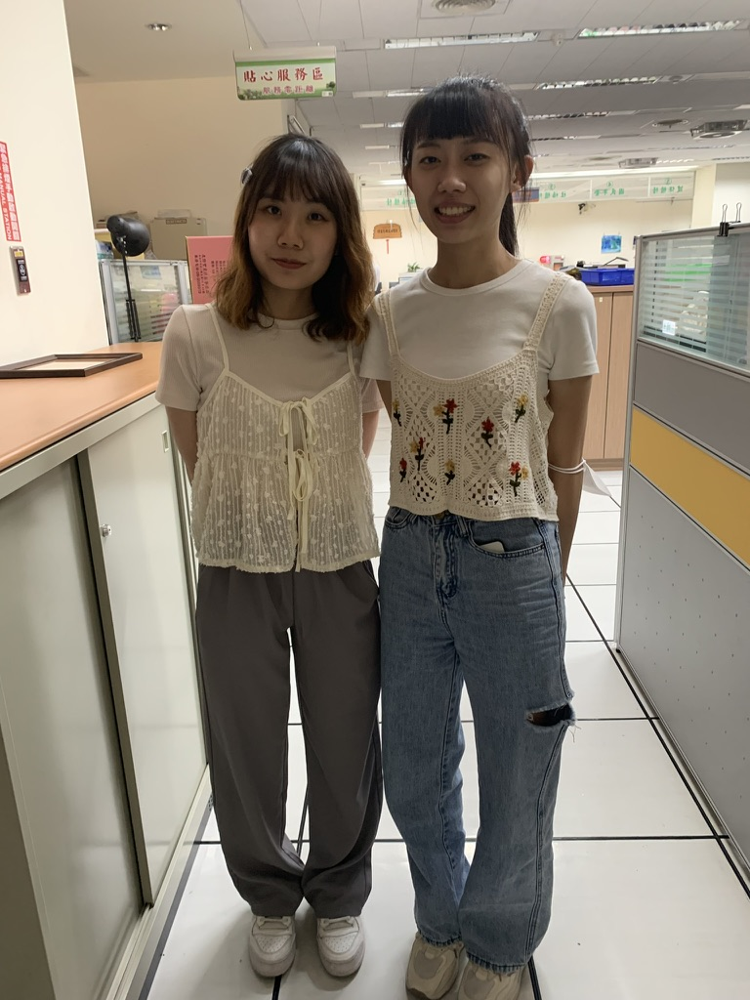
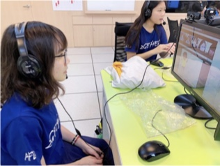

實習生
2026.03 – 2026.07
合作金庫商業銀行 實習
Taiwan Cooperative Bank
實務工作內容
每天依 SOP 核對 100+ 張存款憑證與交易文件，發現差異即協調更正，並把 50+ 件文件案件追蹤到結案。

行政實習
2025.07 – 2025.08
區公所 行政實習
District Office
實務工作內容
支援短期行政專案，負責資料輸入、文件歸檔與紀錄維護，並依單位規範整理作業文件。
NCKU · Teaching Assistant
課程助教
2026.09 – NOW
國立成功大學 課程助教
160 人通識課程
實務工作內容
每週協調 13 位小老師的分工，追蹤 20–30 組報告與錄影素材的繳交，讓完整率達到 100%。
Department Office
工讀生 & 助教
2025.09 – 2026.01
系辦工讀與課程助教
課程 · 會議 · 系所活動
實務工作內容
同時支援 2 至 3 場課程、會議或活動，負責教材、場地、出席紀錄與公告。

遠距教學
ONLINE
英文遠距教學
線上視訊教學
實務工作內容
透過線上視訊進行英文教學。
English Tutor
英文家教
2 YEARS
英文家教
一對三小班制
實務工作內容
兩年內教過 15 名學生，依程度規劃教材與進度，隨時調整講解方式。